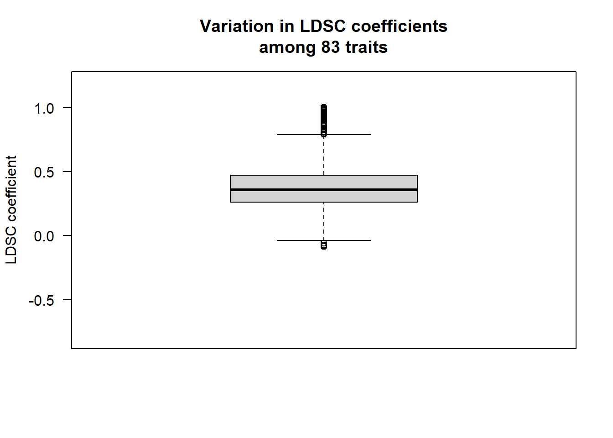
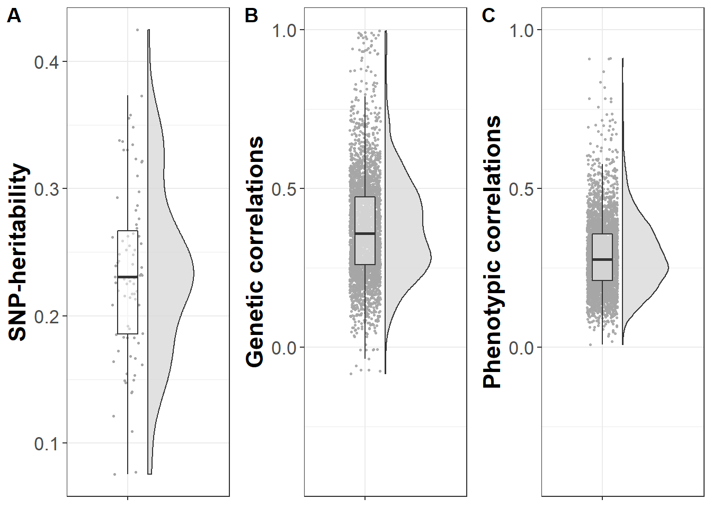

Processing genetic data
\[\\[0.5in]\]
Here we download GWAS summary statistics for 83 regional brain volumes and process them to obtain genetic correlation matrices using the GenomicSEM software. The code displayed performs data visualisation and sanity checks.
\[\\[1in]\]
1. Data download
Use curl -O -L -C - https://open.win.ox.ac.uk/ukbiobank/big40/release/stats/0344.txt.gz to download gwas files for phenotypes listed in pre-registration (Supplementary Table 1) and download table containing SNP info on https://open.win.ox.ac.uk/ukbiobank/big40/.
2. Merge all files with SNP file & reformat them for munging
###### this script formats GWAS files to input expected by GenomiSEM
###### and merges the GWASs with a variant.txt file containing an INFO column and allele frequency column
## before running this R script I renamed the gwas files in linux using: for i in *; do mv "$i" gwas_"$i";done
# because R doesn't like file names to start with a number
# set working directory to where gwas files are saved
setwd("~/genetic_networks/data/GWAS_raw")
# load dependencies
library(data.table)
# use pattern 0 because only the gwas files have numbers all starting with 0
gwas_files<-list.files(pattern="0")
# make sure 83 file names have been selected
print(length(gwas_files))
# read all 83 files into R
for (i in 1:length(gwas_files)) assign(gwas_files[i],fread(gwas_files[i],header=T,data.table=F))
# check all files have been read in
print(ls(pattern=".txt"))
print(length(ls(pattern=".txt")))
# read in file with info and af columns
variants<-fread("gwas_variants.txt",header=T,data.table=F)
print(head(variants))
# set wd to where formatted files need to be saved
setwd("~/genetic_networks/data/GWAS_header/")
# format files as expected by Genomic SEM
for(i in gwas_files){
file<-get(i)
print(dim(file))
print(head(file))
# rename pval(-log10) column because R doesn't like that
names(file)[8]<-"pval_transformed"
print(head(file))
# transform pvalues back from log transformation
# https://www.biostars.org/p/358046/
file$pval<-10^(-file$pval_transformed)
print(summary(file$pval))
print(min(file$pval,na.rm=T))
# merge file with variant file to obtain info and af columns
file<-merge(file,variants[,c("rsid","af","info")],by="rsid",all.x=T)
print(head(file))
names(file)<-c("rsid","chr","pos","a1","a2","beta","se","pval_transformed","p","af","info")
file<-file[,c("rsid","chr","pos","a1","a2","beta","se","p","af","info")]
# given allele frequency is the allele frequency for the reference allele a2, but we would like to filter for minor allele frequency
# if allele frequency is larger than or equal to 0.5 (indicating it's major allele), calculate 1-allele frequency
# if it is below 0.5 (indicating minor allele frequency), save existing af value
file$maf<-ifelse(file$af >=0.5, 1-file$af, file$af)
# add N column, all phenotypes are reported to have N=21,282
file$N<-21282
print(head(file))
fwrite(file,file=i, quote=FALSE,col.names=TRUE,row.names=F,na="NA",sep=" ")
}3. Munge files as expected by Genomic SEM software
### this script will munge the files previously formated using GenomicSEM
# load dependencies
library(tidyr)
library(data.table)
library(devtools)
library(GenomicSEM)
# set wd to where formatted files are saved
setwd("~/genetic_networks/data/GWAS_header/")
hm3<-"~/genetic_networks/data/w_hm3.noMHC.snplist"
############## make sure that gwas files are named after the right region
# list gwas files you want to munge
gwas_files<-list.files(pattern="gwas_")
print(length(gwas_files))
# build a data frame that contains information on file_name and corresponding region of interest
gwas_files<-data.frame(cbind(gwas_files,gwas_files),stringsAsFactor=FALSE)
names(gwas_files)<-c("file_names","No")
gwas_files<-gwas_files[,c("file_names","No")]
gwas_files$file_names<-as.character(gwas_files$file_names)
gwas_files$No<-as.character(gwas_files$No)
print(str(gwas_files))
gwas_files<-separate(gwas_files,No,into=c("delete","No"),sep="_0")
gwas_files<-gwas_files[,c("file_names","No")]
gwas_files<-separate(gwas_files,No,into="No",sep=".txt")
# read in files containing regions_of_interest
# this file contains region names in one column, and the download number from the website in other column
#Region No
#Left_bankssts 344
#Left_caudal_anterior_cingulate 345
regions_of_interest<-fread("~/genetic_networks/scripts/format_files/regions_of_interest.txt",header=T,data.table=F)
print("Done reading in regions of interest")
gwas_files<-merge(gwas_files,regions_of_interest,by="No")
print(gwas_files)
#loop because genomicSEM can't handle 83 files at the same time
for (i in 1:length(gwas_files)){
files<-gwas_files[i,"file_names"]
print(files)
trait.names<-gwas_files[i,"Region"]
print(trait.names)
munge(files=files,
hm3=hm3,
trait.names=trait.names,
info.filter = 0.9)
}After munging the files have 9 columns, and 1,171,881 rows (SNPs).
4. Calculate LDSC
### after formatting and munging the gwas files, I have manually transferred the files into a folder called "GWAS_munged"
library(stringr)
library(devtools)
library(GenomicSEM)
# set wd to the munged GWAS folder
setwd("~/genetic_networks/data/GWAS_munged")
# specifications for ldsc function
traits<-list.files(pattern=".sumstats.gz")
# double check that 83 files have been read in
print(length(traits))
# no sample or population prevalence needed because brain volumes are continuous traits
# specify NA for both
desired_length<-length(traits)
sample.prev<-rep(NA, desired_length)
print(sample.prev)
population.prev<-rep(NA, desired_length)
print(population.prev)
# ld scores and weights previously downloaded (European population)
ld<-"~/genetic_networks/data/eur_w_ld_chr/"
wld<-"~/genetic_networks/data/eur_w_ld_chr/"
gwas_munged<-list.files(pattern=".sumstats.gz")
gwas_munged<-str_replace(gwas_munged,pattern=".sumstats.gz",replacement="")
trait.names<-gwas_munged
# double check that trait.names and traits match up
print(data.frame(trait.names,traits))
LDSCoutput_wholebrain<-ldsc(traits=traits,
ld=ld,wld=wld,
trait.names = trait.names,
ldsc.log="ldsc_wholebrain.log",
sample.prev=sample.prev,
population.prev=population.prev,
stand=T)
## save output for subsequent analyses
save(LDSCoutput_wholebrain, file="~/genetic_networks/data/ldsc_output/ldsc_wholebrain.RData")5. Plot heatmaps
## this script is displaying the heatmaps of the networks
rm(list=ls())
# load dependencies
library(stringr)
library(reshape2)
library(ggplot2)
# load data and name it according to network
workingwd<-getwd()
temporarywd<-paste0(workingwd,"/data/ldsc_output/")
setwd(temporarywd)
networks<-list.files(pattern=".RData")
network_names<-str_replace(networks,pattern=".RData",replacement = "")
for(i in 1:length(networks)){
load(networks[i])
name<-network_names[i]
assign(name,LDSCoutput)
}
## name all columns in S_Stand after brain regions and round S_Stand
for(i in network_names){
output<-get(i)
dimnames(output$S_Stand)[[1]]<-dimnames(output$S)[[2]]
dimnames(output$S_Stand)[[2]]<-dimnames(output$S)[[2]]
name<-i
assign(name,output)
output$S_Stand<-round(output$S_Stand,digits = 2)
name_cor<-paste0("cor_",i)
assign(name_cor,output$S_Stand)
}
# count number of correlation matrices
#length(ls(pattern="cor_"))
# create vector containing names of the correlation matrices
matrices<-ls(pattern="cor_")
## plot the rounded correlation matrices
# get lower triangle of matrix
for(i in matrices){
cormatrix<- get(i)
get_lower_tri<-function(cormatrix){
cormatrix[upper.tri(cormatrix)] <- NA
return(cormatrix)
}
lower_triangle<-get_lower_tri(cormatrix)
lower_triangle<-reshape2::melt(lower_triangle)
#print(i)
#print(lower_triangle)
lower_triangle$value<-ifelse(lower_triangle$value >1,1,lower_triangle$value)
heatmap<-
ggplot(data=lower_triangle, aes(Var1,Var2,fill=value))+
geom_tile(color = "white")+
theme_minimal()+
theme_bw()+
theme(axis.text.x = element_text(angle = 45, vjust = 1,
size = 8, hjust = 1))+
theme(axis.text.y = element_text(vjust = 1,
size = 8, hjust = 1))+
theme(axis.title.x=element_blank(),
axis.title.y = element_blank(),
panel.grid.major = element_blank(),
panel.border = element_blank(),
axis.ticks = element_blank(),
legend.justification = c(1,0),
#legend.position = c(0.45,0.7),
legend.direction = "horizontal")+
scale_fill_gradient2(low="royalblue1",high="palevioletred",mid ="white",
midpoint=0,limit=c(-1,1),na.value="white",
name="Genetic\ncorrelation")+
guides(fill=guide_colorbar(barwidth = 7,barheight = 1,title.position = "top",title.hjust = 0.5))+
coord_fixed()
heatmap<-heatmap+
geom_text(aes(Var1,Var2,label=value),color="black",size=2)
name<-paste0(i,"_heatmap")
assign(name,heatmap)
}Example correlation matrices for three networks inferred through LDSC
Central Executive

Cingulo-opercular
Default Mode
Plot heatmap for genetic correlations across the whole brain
# set working directory
workingd<-getwd()
temporarywd<-paste0(workingd,"/data/ldsc_output/whole_brain")
setwd(temporarywd)
load("whole_brain.RData")
ldscoutput<-LDSCoutput_wholebrain
whole_brain_corr<-reshape2::melt(ldscoutput$S_Stand)
whole_brain_corr$value_corrected<-ifelse(whole_brain_corr$value>1,1,whole_brain_corr$value)
heatmap<-
ggplot(data=whole_brain_corr, aes(Var1,Var2,fill=value_corrected))+
geom_tile(color = "white")+
theme_minimal()+
theme_bw()+
theme(axis.text.x = element_blank())+
theme(axis.text.y = element_blank())+
theme(axis.title.x=element_blank(),
axis.title.y = element_blank(),
panel.grid.major = element_blank(),
panel.border = element_blank(),
axis.ticks = element_blank(),
legend.justification = c(1,0),
#legend.position = c(0.45,0.7),
legend.direction = "horizontal")+
scale_fill_gradient2(low="royalblue1",high="palevioletred2",mid ="white",
midpoint=0,limit=c(-1,1),na.value="white",
name="Genetic\ncorrelation")+
guides(fill=guide_colorbar(barwidth = 7,barheight = 1,title.position = "top",title.hjust = 0.5))+
coord_fixed()
heatmap
The vertical line through the diagnonal indicates the genetic correlation of a brain area with itself, and the vertical lines that run parallel to it indicate the strong genetic correlation with their contralateral counterpart.
Code for heatmaps in Supplementary Materials
### whole brain
tiff("heatmap_whole_brain.tiff", width = 7, height = 6, units = 'in', res=1000)
heatmap
dev.off()
### central executive
tiff("heatmap_central_exec.tiff", width = 6, height = 6, units = 'in', res=1000)
cor_central_exec_heatmap
dev.off()
### cingulo
tiff("heatmap_cingulo.tiff", width = 6, height = 6, units = 'in', res=1000)
cor_cingulo_heatmap
dev.off()
### default mode
tiff("heatmap_default.tiff", width = 7, height = 7, units = 'in', res=1000)
cor_default_mode_heatmap
dev.off()
### hippocampal
tiff("heatmap_hippocampal.tiff", width = 6, height = 6, units = 'in', res=1000)
cor_hippocampal_heatmap
dev.off()
### Multiple demand
tiff("heatmap_multiple.tiff", width = 6, height = 6, units = 'in', res=1000)
cor_multiple_heatmap
dev.off()
### P-FIT
tiff("heatmap_p_fit.tiff", width = 10, height = 10, units = 'in', res=1000)
cor_p_fit_heatmap
dev.off()
### Salience
tiff("heatmap_salience.tiff", width = 6, height = 6, units = 'in', res=1000)
cor_salience_heatmap
dev.off()
### Sensorimotor
tiff("heatmap_sensorimotor.tiff", width = 6, height = 6, units = 'in', res=1000)
cor_sensori_heatmap
dev.off()
### temporo
tiff("heatmap_temporo.tiff", width = 10, height = 10, units = 'in', res=1000)
cor_temporo_heatmap
dev.off()
Sanity checks
Display genetic correlations
library(plyr)
library(TeachingDemos)
source("https://raw.githubusercontent.com/talgalili/R-code-snippets/master/boxplot.with.outlier.label.r")
# load whole brain data
workingd<-getwd()
temporarywd<-paste0(workingd,"/data/ldsc_output/whole_brain")
setwd(temporarywd)
load("whole_brain.RData")
ldscoutput<-LDSCoutput_wholebrain
dimnames(ldscoutput$S_Stand)[[1]]<-dimnames(ldscoutput$S)[[2]]
dimnames(ldscoutput$S_Stand)[[2]]<-dimnames(ldscoutput$S)[[2]]
lower_triangle<-get_lower_tri(ldscoutput$S_Stand)
diag(lower_triangle)<-NA
lower_triangle<-reshape2::melt(lower_triangle)
lower_triangle$jointname<-paste(lower_triangle$Var1,lower_triangle$Var2)
boxplot.with.outlier.label(lower_triangle$value,NA,xaxt="n",yaxt="n",ylab="LDSC coefficient",ylim=c(-0.8,1.2),main="Variation in LDSC coefficients\namong 83 traits",spread_text = F)
axis(side=2,las=2)
# display the lower correlations
#lower_triangle$jointname<-ifelse(lower_triangle$value<=-0.25,lower_triangle$jointname,NA)
display<-lower_triangle[which(!is.na(lower_triangle$value)),c("Var1","Var2","value")]
display$value<-round(display$value, digits=2)
names(display)<-c("Volume 1","Volume 2","Genetic correlation")
library(knitr)
#kable()
library(DT)
datatable(display, rownames=FALSE, filter="top",options= list(pageLength=5,scrollX=T)) # ggplot(lower_triangle, aes(y = lower_triangle$value,x=1)) +
# geom_boxplot() +
# geom_text(aes(label = lower_triangle$jointname), na.rm = TRUE, nudge_y = 0.05)Plot LDSC intercepts
### plot intercepts of genetic correlation matrices
rm(list=ls())
## this script is displaying the heatmaps of the networks
# load dependencies
library(stringr)
library(reshape2)
library(ggplot2)
# load data and name it according to network
workingd<-getwd()
temporarywd<-paste0(workingd,"/data/ldsc_output/")
setwd(temporarywd)
networks<-list.files(pattern=".RData")
network_names<-str_replace(networks,pattern=".RData",replacement = "")
for(i in 1:length(networks)){
load(networks[i])
name<-network_names[i]
assign(name,LDSCoutput)
}
## name all columns in $I after brain regions and round $I
for(i in network_names){
output<-get(i)
dimnames(output$I)[[1]]<-dimnames(output$S)[[2]]
dimnames(output$I)[[2]]<-dimnames(output$S)[[2]]
name<-i
assign(name,output)
output$I<-round(output$I,digits = 2)
name_cor<-paste0("intercepts_",i)
assign(name_cor,output$I)
}
# count number of correlation matrices
#length(ls(pattern="intercepts_"))
# create vector containing names of the correlation matrices
matrices<-ls(pattern="intercepts_")
## plot the rounded correlation matrices
# get lower triangle of matrix
for(i in matrices){
cormatrix<- get(i)
get_lower_tri<-function(cormatrix){
cormatrix[upper.tri(cormatrix)] <- NA
return(cormatrix)
}
lower_triangle<-get_lower_tri(cormatrix)
lower_triangle<-reshape2::melt(lower_triangle)
lower_triangle$corrected<-with(lower_triangle, ifelse(value>=1.00,1.00,value))
#print(i)
#print(lower_triangle)
heatmap<-
ggplot(data=lower_triangle, aes(Var1,Var2,fill=corrected))+
geom_tile(color = "white")+
theme_minimal()+
theme_bw()+
theme(axis.text.x = element_text(angle = 45, vjust = 1,
size = 8, hjust = 1))+
theme(axis.text.x = element_text(angle = 45, vjust = 1,
size = 8, hjust = 1))+
theme(axis.title.x=element_blank(),
axis.title.y = element_blank(),
panel.grid.major = element_blank(),
panel.border = element_blank(),
axis.ticks = element_blank(),
legend.justification = c(1,0),
#legend.position = c(0.45,0.7),
legend.direction = "horizontal")+
scale_fill_gradient2(low="gold4",high="darkorange3",mid ="gold",
midpoint=0,limit=c(-1,1),na.value="white",
name="LDSC intercepts")+
guides(fill=guide_colorbar(barwidth = 7,barheight = 1,title.position = "top",title.hjust = 0.5))+
coord_fixed()
heatmap<-heatmap+
geom_text(aes(Var1,Var2,label=value),color="black",size=2)
name<-paste0(i,"_heatmap")
assign(name,heatmap)
}
Central Executive
Cingulo-opercular
Default Mode
LDSC intercepts across the whole brain
Do the LDSC intercepts correlate with the phenotypic correlations between brain areas?
The intercept depend on the phenotypic correlation between traits which can be negative or positive. Thus, we plot the intercepts as a function of the pairwise phenotypic correlation between traits. Based on LDSC theory it should look like a straight line + small variation due to sampling error.
# load intercepts
workingd<-getwd()
temporarywd<-paste0(workingd,"/data/ldsc_output/whole_brain/")
setwd(temporarywd)
load("whole_brain.RData")
ldscoutput<-LDSCoutput_wholebrain
# name rows and columns
dimnames(ldscoutput$I)[[1]]<-dimnames(ldscoutput$S)[[2]]
dimnames(ldscoutput$I)[[2]]<-dimnames(ldscoutput$S)[[2]]
# keep lower matrix
cormatrix<-ldscoutput$I
get_lower_tri<-function(cormatrix){
cormatrix[upper.tri(cormatrix)] <- NA
return(cormatrix)
}
intercepts<-get_lower_tri(cormatrix)
diag(intercepts)<-NA
intercepts<-reshape2::melt(intercepts)
names(intercepts)<-c("region1","region2","intercepts")
# load phenotypic correlations
temporarywd<-paste0(workingd,"/data/phenotypic/")
setwd(temporarywd)
load("residualised_Zhao_corr.RData")
phenotypic_cor<-cor_matrix
# sort same as intercept matrix
names<-dimnames(ldscoutput$S)[[2]]
phenotypic_cor<-phenotypic_cor[names,names]
# get lower triangle
phenotypic_cor<-get_lower_tri(phenotypic_cor)
phenotypic_cor<-reshape2::melt(phenotypic_cor)
names(phenotypic_cor)<-c("region1","region2","phenotypic_cor")
intercept_pheno<-merge(intercepts,phenotypic_cor,by=c("region1","region2"))
plot(intercept_pheno$phenotypic_cor,intercept_pheno$intercepts,xlab="Phenotypic correlations",ylab="LDSC intercepts")
abline(lm(intercept_pheno$intercepts~intercept_pheno$phenotypic_cor,na.action = "na.omit"),col="red")summary(lm(intercept_pheno$intercepts~intercept_pheno$phenotypic_cor))##
## Call:
## lm(formula = intercept_pheno$intercepts ~ intercept_pheno$phenotypic_cor)
##
## Residuals:
## Min 1Q Median 3Q Max
## -0.44208 -0.03772 -0.00385 0.03426 0.40998
##
## Coefficients:
## Estimate Std. Error t value Pr(>|t|)
## (Intercept) 0.019470 0.001497 13.01 <2e-16 ***
## intercept_pheno$phenotypic_cor 0.660920 0.010493 62.99 <2e-16 ***
## ---
## Signif. codes: 0 '***' 0.001 '**' 0.01 '*' 0.05 '.' 0.1 ' ' 1
##
## Residual standard error: 0.07103 on 3079 degrees of freedom
## (3160 observations deleted due to missingness)
## Multiple R-squared: 0.5631, Adjusted R-squared: 0.5629
## F-statistic: 3968 on 1 and 3079 DF, p-value: < 2.2e-16# how many intercepts are there? Should be 3404
#sum(!is.na(intercepts$intercepts))Are all traits heritable?
Distribution of heritability estimates for all 83 brain volumes
#!/bin/bash -l
#SBATCH --output=~/genetic_networks/outputs/ldsc/calculate_heritabilities.txt
#SBATCH --job-name=heritability_brain_volume
# specify time limit
#SBATCH --time=0-99:00
# memory per job
#SBATCH --mem=12G
module load devtools/anaconda/2019.3-python2.7.16
~/Software/ldscore/ldsc/ldsc.py \
--rg ~/genetic_networks/data/GWAS_munged/Brain_stem.sumstats.gz,\
~/genetic_networks/data/GWAS_munged/Left_accumbens_area.sumstats.gz,\
~/genetic_networks/data/GWAS_munged/Left_amygdala.sumstats.gz,\
~/genetic_networks/data/GWAS_munged/Left_bankssts.sumstats.gz,\
~/genetic_networks/data/GWAS_munged/Left_caudal_anterior_cingulate.sumstats.gz,\
~/genetic_networks/data/GWAS_munged/Left_caudal_middle_frontal.sumstats.gz,\
~/genetic_networks/data/GWAS_munged/Left_caudate.sumstats.gz,\
~/genetic_networks/data/GWAS_munged/Left_cuneus.sumstats.gz,\
~/genetic_networks/data/GWAS_munged/Left_DC.sumstats.gz,\
~/genetic_networks/data/GWAS_munged/Left_entorhinal.sumstats.gz,\
~/genetic_networks/data/GWAS_munged/Left_frontal_pole.sumstats.gz,\
~/genetic_networks/data/GWAS_munged/Left_fusiform.sumstats.gz,\
~/genetic_networks/data/GWAS_munged/Left_hippocampus.sumstats.gz,\
~/genetic_networks/data/GWAS_munged/Left_inferior_parietal.sumstats.gz,\
~/genetic_networks/data/GWAS_munged/Left_inferior_temporal.sumstats.gz,\
~/genetic_networks/data/GWAS_munged/Left_insula.sumstats.gz,\
~/genetic_networks/data/GWAS_munged/Left_isthmus_cingulate.sumstats.gz,\
~/genetic_networks/data/GWAS_munged/Left_lateral_occipital.sumstats.gz,\
~/genetic_networks/data/GWAS_munged/Left_lateral_orbitofrontal.sumstats.gz,\
~/genetic_networks/data/GWAS_munged/Left_lingual.sumstats.gz,\
~/genetic_networks/data/GWAS_munged/Left_medial_orbitofrontal.sumstats.gz,\
~/genetic_networks/data/GWAS_munged/Left_middle_temporal.sumstats.gz,\
~/genetic_networks/data/GWAS_munged/Left_pallidum.sumstats.gz,\
~/genetic_networks/data/GWAS_munged/Left_paracentral.sumstats.gz,\
~/genetic_networks/data/GWAS_munged/Left_parahippocampal.sumstats.gz,\
~/genetic_networks/data/GWAS_munged/Left_pars_opercularis.sumstats.gz,\
~/genetic_networks/data/GWAS_munged/Left_pars_orbitalis.sumstats.gz,\
~/genetic_networks/data/GWAS_munged/Left_pars_triangularis.sumstats.gz,\
~/genetic_networks/data/GWAS_munged/Left_pericalcarine.sumstats.gz,\
~/genetic_networks/data/GWAS_munged/Left_postcentral.sumstats.gz,\
~/genetic_networks/data/GWAS_munged/Left_posterior_cingulate.sumstats.gz,\
~/genetic_networks/data/GWAS_munged/Left_precentral.sumstats.gz,\
~/genetic_networks/data/GWAS_munged/Left_precuneus.sumstats.gz,\
~/genetic_networks/data/GWAS_munged/Left_putamen.sumstats.gz,\
~/genetic_networks/data/GWAS_munged/Left_rostral_anterior_cingulate.sumstats.gz,\
~/genetic_networks/data/GWAS_munged/Left_rostral_middle_frontal.sumstats.gz,\
~/genetic_networks/data/GWAS_munged/Left_superior_frontal.sumstats.gz,\
~/genetic_networks/data/GWAS_munged/Left_superior_parietal.sumstats.gz,\
~/genetic_networks/data/GWAS_munged/Left_superior_temporal.sumstats.gz,\
~/genetic_networks/data/GWAS_munged/Left_supramarginal.sumstats.gz,\
~/genetic_networks/data/GWAS_munged/Left_thalamus_proper.sumstats.gz,\
~/genetic_networks/data/GWAS_munged/Left_transverse_temporal.sumstats.gz,\
~/genetic_networks/data/GWAS_munged/Right_accumbens_area.sumstats.gz,\
~/genetic_networks/data/GWAS_munged/Right_amygdala.sumstats.gz,\
~/genetic_networks/data/GWAS_munged/Right_bankssts.sumstats.gz,\
~/genetic_networks/data/GWAS_munged/Right_caudal_anterior_cingulate.sumstats.gz,\
~/genetic_networks/data/GWAS_munged/Right_caudal_middle_frontal.sumstats.gz,\
~/genetic_networks/data/GWAS_munged/Right_caudate.sumstats.gz,\
~/genetic_networks/data/GWAS_munged/Right_cuneus.sumstats.gz,\
~/genetic_networks/data/GWAS_munged/Right_DC.sumstats.gz,\
~/genetic_networks/data/GWAS_munged/Right_entorhinal.sumstats.gz,\
~/genetic_networks/data/GWAS_munged/Right_frontal_pole.sumstats.gz,\
~/genetic_networks/data/GWAS_munged/Right_fusiform.sumstats.gz,\
~/genetic_networks/data/GWAS_munged/Right_hippocampus.sumstats.gz,\
~/genetic_networks/data/GWAS_munged/Right_inferior_parietal.sumstats.gz,\
~/genetic_networks/data/GWAS_munged/Right_inferior_temporal.sumstats.gz,\
~/genetic_networks/data/GWAS_munged/Right_insula.sumstats.gz,\
~/genetic_networks/data/GWAS_munged/Right_isthmus_cingulate.sumstats.gz,\
~/genetic_networks/data/GWAS_munged/Right_lateral_occipital.sumstats.gz,\
~/genetic_networks/data/GWAS_munged/Right_lateral_orbitofrontal.sumstats.gz,\
~/genetic_networks/data/GWAS_munged/Right_lingual.sumstats.gz,\
~/genetic_networks/data/GWAS_munged/Right_medial_orbitofrontal.sumstats.gz,\
~/genetic_networks/data/GWAS_munged/Right_middle_temporal.sumstats.gz,\
~/genetic_networks/data/GWAS_munged/Right_pallidum.sumstats.gz,\
~/genetic_networks/data/GWAS_munged/Right_paracentral.sumstats.gz,\
~/genetic_networks/data/GWAS_munged/Right_parahippocampal.sumstats.gz,\
~/genetic_networks/data/GWAS_munged/Right_pars_opercularis.sumstats.gz,\
~/genetic_networks/data/GWAS_munged/Right_pars_orbitalis.sumstats.gz,\
~/genetic_networks/data/GWAS_munged/Right_pars_triangularis.sumstats.gz,\
~/genetic_networks/data/GWAS_munged/Right_pericalcarine.sumstats.gz,\
~/genetic_networks/data/GWAS_munged/Right_postcentral.sumstats.gz,\
~/genetic_networks/data/GWAS_munged/Right_posterior_cingulate.sumstats.gz,\
~/genetic_networks/data/GWAS_munged/Right_precentral.sumstats.gz,\
~/genetic_networks/data/GWAS_munged/Right_precuneus.sumstats.gz,\
~/genetic_networks/data/GWAS_munged/Right_putamen.sumstats.gz,\
~/genetic_networks/data/GWAS_munged/Right_rostral_anterior_cingulate.sumstats.gz,\
~/genetic_networks/data/GWAS_munged/Right_rostral_middle_frontal.sumstats.gz,\
~/genetic_networks/data/GWAS_munged/Right_superior_frontal.sumstats.gz,\
~/genetic_networks/data/GWAS_munged/Right_superior_parietal.sumstats.gz,\
~/genetic_networks/data/GWAS_munged/Right_superior_temporal.sumstats.gz,\
~/genetic_networks/data/GWAS_munged/Right_supramarginal.sumstats.gz,\
~/genetic_networks/data/GWAS_munged/Right_thalamus_proper.sumstats.gz,\
~/genetic_networks/data/GWAS_munged/Right_transverse_temporal.sumstats.gz \
--ref-ld-chr ~/Software/ldscore/eur_w_ld_chr/ \
--w-ld-chr ~/Software/ldscore/eur_w_ld_chr/ \
--out ~/genetic_networks/outputs/ldsc/volumes_heritability_ldsc.out
### Aim: run univariate LDSC to get heritability estimates with Bulik-Sullivan python software
### extract files in cd ~/genetic_networks/data/GWAS_munged/ and save in a file
### using ls -d "$PWD"/*.gz > listOfFiles.list
### Author: Anna Furtjes
### Date: 16/05/2020
### submit using: sbatch -p shared ~/genetic_networks/scripts/perform_ldsc/ldsc_heritability_volumes_26052020.sh
## copy over onto local machineworkingd<-getwd()
temporarywd<-paste0(workingd,"/data_Smith/heritability_volumes/")
setwd(temporarywd)
library(data.table)
heritability<-fread("heritability_brain_volumes_26052020.txt",header=T,data.table = F)
summary(heritability$h2_obs)## Min. 1st Qu. Median Mean 3rd Qu. Max.
## 0.0741 0.1507 0.1852 0.2036 0.2425 0.4369library(plyr)
source("https://raw.githubusercontent.com/talgalili/R-code-snippets/master/boxplot.with.outlier.label.r")
boxplot_h2<-boxplot.with.outlier.label(heritability$h2_obs,heritability$p2,xaxt="n",yaxt="n",ylab="SNP heritability",spread_text = F)
axis(side=2,las=2)Display heritability estimates
table<-heritability[,c("p2","h2_obs","h2_obs_se")]
names(table)<-c("Brain areas","h2 observed","SE")
table<-table[order(table$`h2 observed`),]
library(DT)
datatable(table, rownames=FALSE, filter="top",options = list(pageLength=5, scrollX=T))Note. The frontal pole is only a tiny area which often is difficult to segment. This might have caused low levels of systematic variation across the GWAS resulting in very low SNP heritability captured by LDSC.
Data display in manuscript
Boxplots displaying SNP-heritabilites and genetic correlations
library(readr)
library(tidyr)
library(ggplot2)
library(Hmisc)
library(plyr)
library(RColorBrewer)
library(reshape2)
library(PupillometryR)
library(cowplot)
# plotted with explanation on : https://micahallen.org/2018/03/15/introducing-raincloud-plots/
#tiff("boxplots.tiff", width = 9, height = 6, units = 'in', res=1000)
##########################################
## Plot SNP-heriability
#########################################
# data to be plotted: heritability estimates
heritability$name<-rep("SNP-heritability",83)
heritability$outlier<-ifelse(heritability$p2=="Brain_stem", "Brain stem",NA)
# plot SNP-heritability
plot_heritability<-
ggplot(data=heritability,aes(x=name,y=h2_obs))+
geom_flat_violin(position = position_nudge(x = .2, y = 0), alpha = .8, fill="gray85",alpha=0.1) +
geom_point(aes(y = h2_obs), position = position_jitter(width = .15), size = .5, alpha = 1,colour="gray65")+
geom_boxplot(width = .2, guides = FALSE, outlier.shape = NA, alpha = 0.5)+
geom_text(aes(label = outlier), na.rm = TRUE, hjust = 1.1, vjust=-1.2, colour="gray65",size=3.5)+
expand_limits(x=2)+
theme_bw() +
theme(text = element_text(size=12),
axis.text.x = element_blank(),
axis.text.y = element_text(size=13),
axis.title.y = element_text(face="bold", colour='black', size=17),
axis.title.x = element_blank())+
ylab("SNP-heritability")
##################################################
# Plot genetic correlations
#################################################
temporarywd<-paste0(workingd,"/data/ldsc_output/whole_brain/")
setwd(temporarywd)
load("whole_brain.RData")
ldscoutput<-LDSCoutput_wholebrain
dimnames(ldscoutput$S_Stand)[[1]]<-dimnames(ldscoutput$S)[[2]]
dimnames(ldscoutput$S_Stand)[[2]]<-dimnames(ldscoutput$S)[[2]]
get_lower_tri<-function(cormatrix){
cormatrix[upper.tri(cormatrix)] <- NA
return(cormatrix)
}
lower_triangle<-get_lower_tri(ldscoutput$S_Stand)
# remove correlations with oneself
diag(lower_triangle)<-NA
#melt correlation matrix
lower_triangle<-reshape2::melt(lower_triangle)
# remove correlations with itself
lower_triangle$value<-ifelse(lower_triangle$Var1 == lower_triangle$Var2,NA,lower_triangle$value)
lower_triangle$jointname<-paste(lower_triangle$Var1,lower_triangle$Var2)
lower_triangle$name<-rep("genetic corr",nrow(lower_triangle))
# we only keep lower_triangle values that are not missing
lower_triangle<-lower_triangle[which(!is.na(lower_triangle$value)),]
## plot genetic correlations
plot_genetic_corr<-
ggplot(data=lower_triangle,aes(x=name,y=value))+
geom_flat_violin(position = position_nudge(x = .2, y = 0), alpha = .8,fill="gray85",alpha=0.6) +
geom_point(aes(y = value), position = position_jitter(width = .15), size = .5, alpha = 0.9,colour="gray65") +
geom_boxplot(width = .2, guides = FALSE, outlier.shape = NA, alpha = 0.5)+
expand_limits(x=2)+
theme_bw()+
theme(text = element_text(size=12),
axis.text.x = element_blank(),
axis.text.y = element_text(size=13),
axis.title.y = element_text(face="bold", colour='black', size=17),
axis.title.x = element_blank())+
ylab("Genetic correlations")+
ylim(-0.4,1)
#############################################################################################
# make same plot for phenotypic correlations
# code for how we obtain the cor_matrix on the Edinburgh server can be found in this document under "Pre-processing: Phenotypic data"
temporarywd_pheno<-paste0(workingd,"/data/phenotypic/")
setwd(temporarywd_pheno)
load("residualised_Zhao_corr.RData")
lower_triangle_pheno<-get_lower_tri(cor_matrix)
# remove correlations with oneself
diag(lower_triangle_pheno)<-NA
#melt
lower_triangle_pheno<-reshape2::melt(lower_triangle_pheno)
lower_triangle_pheno$value<-ifelse(lower_triangle_pheno$Var1 == lower_triangle_pheno$Var2,NA,lower_triangle_pheno$value)
# we only keep non-missing values
lower_triangle_pheno<-lower_triangle_pheno[which(!is.na(lower_triangle_pheno$value)),]
# add variable to plot against
lower_triangle_pheno$name<-rep("phenotypic corr",nrow(lower_triangle_pheno))
## plot phenotypic correlations
plot_phenotypic_corr<-
ggplot(data=lower_triangle_pheno,aes(x=name,y=value))+
geom_flat_violin(position = position_nudge(x = .2, y = 0), alpha = .8,fill="gray85",alpha=0.6) +
geom_point(aes(y = value), position = position_jitter(width = .15), size = .5, alpha = 0.9,colour="gray65") +
geom_boxplot(width = .2, guides = FALSE, outlier.shape = NA, alpha = 0.5)+
expand_limits(x=2)+
theme_bw()+
theme(text = element_text(size=12),
axis.text.x = element_blank(),
axis.text.y = element_text(size=13),
axis.title.y = element_text(face="bold", colour='black', size=17),
axis.title.x = element_blank())+
ylab("Phenotypic correlations")+
ylim(-0.4,1)
#############################################################################################
# display all three plots together
plot_grid(plot_heritability,plot_genetic_corr,plot_phenotypic_corr,ncol=3,nrow=1,labels = c("A","B","C"))
#setwd(workingd)
#dev.off()
By Anna Elisabeth Fürtjes
anna.furtjes@kcl.ac.uk